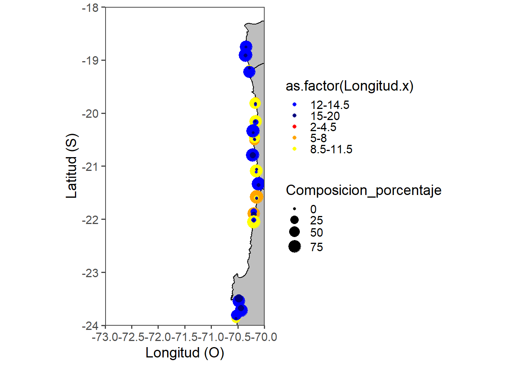

RECLAN="152-2022"
rm(list=ls(all=TRUE))Reporte ACUST 2025
Librerías
library(tidyverse)── Attaching core tidyverse packages ──────────────────────── tidyverse 2.0.0 ──
✔ dplyr 1.1.2 ✔ readr 2.1.4
✔ forcats 1.0.0 ✔ stringr 1.5.0
✔ ggplot2 3.4.3 ✔ tibble 3.2.1
✔ lubridate 1.9.2 ✔ tidyr 1.3.0
✔ purrr 1.0.2
── Conflicts ────────────────────────────────────────── tidyverse_conflicts() ──
✖ dplyr::filter() masks stats::filter()
✖ dplyr::lag() masks stats::lag()
ℹ Use the conflicted package (<http://conflicted.r-lib.org/>) to force all conflicts to become errorslibrary(readxl)
library(ggplot2)
library(rgdal)#para abril shape fileLoading required package: sp
The legacy packages maptools, rgdal, and rgeos, underpinning the sp package,
which was just loaded, will retire in October 2023.
Please refer to R-spatial evolution reports for details, especially
https://r-spatial.org/r/2023/05/15/evolution4.html.
It may be desirable to make the sf package available;
package maintainers should consider adding sf to Suggests:.
The sp package is now running under evolution status 2
(status 2 uses the sf package in place of rgdal)
Please note that rgdal will be retired during October 2023,
plan transition to sf/stars/terra functions using GDAL and PROJ
at your earliest convenience.
See https://r-spatial.org/r/2023/05/15/evolution4.html and https://github.com/r-spatial/evolution
rgdal: version: 1.6-7, (SVN revision 1203)
Geospatial Data Abstraction Library extensions to R successfully loaded
Loaded GDAL runtime: GDAL 3.6.2, released 2023/01/02
Path to GDAL shared files: C:/Users/luis.lacruz/AppData/Local/R/win-library/4.3/rgdal/gdal
GDAL does not use iconv for recoding strings.
GDAL binary built with GEOS: TRUE
Loaded PROJ runtime: Rel. 9.2.0, March 1st, 2023, [PJ_VERSION: 920]
Path to PROJ shared files: C:/Users/luis.lacruz/AppData/Local/R/win-library/4.3/rgdal/proj
PROJ CDN enabled: FALSE
Linking to sp version:2.0-0
To mute warnings of possible GDAL/OSR exportToProj4() degradation,
use options("rgdal_show_exportToProj4_warnings"="none") before loading sp or rgdal.library(ggspatial)# para funcioó annotation_scale()
library(scatterpie)
Attaching package: 'scatterpie'
The following object is masked from 'package:sp':
recenterlibrary(gridExtra)#juntar figuras
Attaching package: 'gridExtra'
The following object is masked from 'package:dplyr':
combinelibrary(readxl)
library(knitr)
library(kableExtra)
Attaching package: 'kableExtra'
The following object is masked from 'package:dplyr':
group_rowslibrary(ggpubr)
library(sp)
library(sf)Linking to GEOS 3.11.2, GDAL 3.6.2, PROJ 9.2.0; sf_use_s2() is TRUElibrary(terra)terra 1.7.39
Attaching package: 'terra'
The following object is masked from 'package:ggpubr':
rotate
The following object is masked from 'package:knitr':
spin
The following object is masked from 'package:rgdal':
project
The following object is masked from 'package:tidyr':
extractlibrary(knitr)
library(egg)
Attaching package: 'egg'
The following object is masked from 'package:ggpubr':
ggarrange#library(kableExtra)
#library(xtable)
#library(huxtable)Datos acústicos, biológicos-pesqueros y oceanográficos
datos=read_excel("muestreo.xlsx", sheet="TODOS")Warning: Expecting numeric in I1468 / R1468C9: got 's/ otolitos'Warning: Expecting numeric in I1868 / R1868C9: got 'Muestras congeladas'Warning: Expecting numeric in I1869 / R1869C9: got 'Muestras congeladas'Warning: Expecting numeric in I1870 / R1870C9: got 'Muestras congeladas'Warning: Expecting numeric in I1871 / R1871C9: got 'Muestras congeladas'Warning: Expecting numeric in I1872 / R1872C9: got 'Muestras congeladas'Warning: Expecting numeric in I1873 / R1873C9: got 'Muestras congeladas'Warning: Expecting numeric in I1874 / R1874C9: got 'Muestras congeladas'Warning: Expecting numeric in I1875 / R1875C9: got 'Muestras congeladas'Warning: Expecting numeric in I1876 / R1876C9: got 'Muestras congeladas'Warning: Expecting numeric in I1877 / R1877C9: got 'Muestras congeladas'Warning: Expecting numeric in I1878 / R1878C9: got 'Muestras congeladas'Warning: Expecting numeric in I1879 / R1879C9: got 'Muestras congeladas'Warning: Expecting numeric in I1880 / R1880C9: got 'Muestras congeladas'Warning: Expecting numeric in I1881 / R1881C9: got 'Muestras congeladas'Warning: Expecting numeric in I1882 / R1882C9: got 'Muestras congeladas'Warning: Expecting numeric in I1883 / R1883C9: got 'Muestras congeladas'Warning: Expecting numeric in I1884 / R1884C9: got 'Muestras congeladas'Warning: Expecting numeric in I1885 / R1885C9: got 'Muestras congeladas'Warning: Expecting numeric in I1886 / R1886C9: got 'Muestras congeladas'Warning: Expecting numeric in I1887 / R1887C9: got 'Muestras congeladas'Warning: Expecting numeric in I1888 / R1888C9: got 'Muestras congeladas'Warning: Expecting numeric in I1889 / R1889C9: got 'Muestras congeladas'Warning: Expecting numeric in I1890 / R1890C9: got 'Muestras congeladas'Warning: Expecting numeric in I1891 / R1891C9: got 'Muestras congeladas'Warning: Expecting numeric in I1892 / R1892C9: got 'Muestras congeladas'Warning: Expecting numeric in I1893 / R1893C9: got 'Muestras congeladas'Warning: Expecting numeric in I1894 / R1894C9: got 'Muestras congeladas'Warning: Expecting numeric in I1895 / R1895C9: got 'Muestras congeladas'Warning: Expecting numeric in I1896 / R1896C9: got 'Muestras congeladas'Warning: Expecting numeric in I1897 / R1897C9: got 'Muestras congeladas'Warning: Expecting numeric in I1898 / R1898C9: got 'Muestras congeladas'Warning: Expecting numeric in I1899 / R1899C9: got 'Muestras congeladas'Warning: Expecting numeric in I1900 / R1900C9: got 'Muestras congeladas'Warning: Expecting numeric in I1901 / R1901C9: got 'Muestras congeladas'Warning: Expecting numeric in I1902 / R1902C9: got 'Muestras congeladas'Warning: Expecting numeric in I1903 / R1903C9: got 'Muestras congeladas'Warning: Expecting numeric in I1904 / R1904C9: got 'Muestras congeladas'Warning: Expecting numeric in I1905 / R1905C9: got 'Muestras congeladas'Warning: Expecting numeric in I1906 / R1906C9: got 'Muestras congeladas'Warning: Expecting numeric in I1907 / R1907C9: got 'Muestras congeladas'Warning: Expecting numeric in I1908 / R1908C9: got 'Muestras congeladas'Warning: Expecting numeric in I1909 / R1909C9: got 'Muestras congeladas'Warning: Expecting numeric in I1910 / R1910C9: got 'Muestras congeladas'Warning: Expecting numeric in I1911 / R1911C9: got 'Muestras congeladas'Warning: Expecting numeric in I1912 / R1912C9: got 'Muestras congeladas'Warning: Expecting numeric in I1913 / R1913C9: got 'Muestras congeladas'Warning: Expecting numeric in I1914 / R1914C9: got 'Muestras congeladas'Warning: Expecting numeric in I1915 / R1915C9: got 'Muestras congeladas'Warning: Expecting numeric in I1916 / R1916C9: got 'Muestras congeladas'Warning: Expecting numeric in I1917 / R1917C9: got 'Muestras congeladas'Warning: Expecting numeric in I2068 / R2068C9: got 'congelados'Warning: Expecting numeric in I2069 / R2069C9: got 'congelados'Warning: Expecting numeric in I2070 / R2070C9: got 'congelados'Warning: Expecting numeric in I2071 / R2071C9: got 'congelados'Warning: Expecting numeric in I2072 / R2072C9: got 'congelados'Warning: Expecting numeric in I2073 / R2073C9: got 'congelados'Warning: Expecting numeric in I2074 / R2074C9: got 'congelados'Warning: Expecting numeric in I2075 / R2075C9: got 'congelados'Warning: Expecting numeric in I2076 / R2076C9: got 'congelados'Warning: Expecting numeric in I2077 / R2077C9: got 'congelados'Warning: Expecting numeric in I2078 / R2078C9: got 'congelados'Warning: Expecting numeric in I2079 / R2079C9: got 'congelados'Warning: Expecting numeric in I2080 / R2080C9: got 'congelados'Warning: Expecting numeric in I2081 / R2081C9: got 'congelados'Warning: Expecting numeric in I2082 / R2082C9: got 'congelados'Warning: Expecting numeric in I2083 / R2083C9: got 'congelados'Warning: Expecting numeric in I2084 / R2084C9: got 'congelados'Warning: Expecting numeric in I2085 / R2085C9: got 'congelados'Warning: Expecting numeric in I2086 / R2086C9: got 'congelados'Warning: Expecting numeric in I2087 / R2087C9: got 'congelados'Warning: Expecting numeric in I2088 / R2088C9: got 'congelados'Warning: Expecting numeric in I2089 / R2089C9: got 'congelados'Warning: Expecting numeric in I2090 / R2090C9: got 'congelados'Warning: Expecting numeric in I2091 / R2091C9: got 'congelados'Warning: Expecting numeric in I2092 / R2092C9: got 'congelados'Warning: Expecting numeric in I2093 / R2093C9: got 'congelados'Warning: Expecting numeric in I2094 / R2094C9: got 'congelados'Warning: Expecting numeric in I2095 / R2095C9: got 'congelados'Warning: Expecting numeric in I2096 / R2096C9: got 'congelados'Warning: Expecting numeric in I2097 / R2097C9: got 'congelados'Warning: Expecting numeric in I2098 / R2098C9: got 'congelados'Warning: Expecting numeric in I2099 / R2099C9: got 'congelados'Warning: Expecting numeric in I2100 / R2100C9: got 'congelados'Warning: Expecting numeric in I2101 / R2101C9: got 'congelados'Warning: Expecting numeric in I2102 / R2102C9: got 'congelados'Warning: Expecting numeric in I2103 / R2103C9: got 'congelados'Warning: Expecting numeric in I2104 / R2104C9: got 'congelados'Warning: Expecting numeric in I2105 / R2105C9: got 'congelados'Warning: Expecting numeric in I2106 / R2106C9: got 'congelados'Warning: Expecting numeric in I2107 / R2107C9: got 'congelados'Warning: Expecting numeric in I2108 / R2108C9: got 'congelados'Warning: Expecting numeric in I2109 / R2109C9: got 'congelados'Warning: Expecting numeric in I2110 / R2110C9: got 'congelados'Warning: Expecting numeric in I2111 / R2111C9: got 'congelados'Warning: Expecting numeric in I2112 / R2112C9: got 'congelados'Warning: Expecting numeric in I2113 / R2113C9: got 'congelados'Warning: Expecting numeric in I2114 / R2114C9: got 'congelados'Warning: Expecting numeric in I2115 / R2115C9: got 'congelados'Warning: Expecting numeric in I2116 / R2116C9: got 'congelados'Warning: Expecting numeric in I2117 / R2117C9: got 'congelados'control=read_excel("CONTROL_CRUCERO_RECLAN_152_2022.xlsx", sheet="CONTROL LANCES")New names:
• `` -> `...3`
• `` -> `...4`
• `` -> `...5`
• `` -> `...6`
• `` -> `...7`
• `` -> `...8`
• `` -> `...9`
• `` -> `...10`
• `` -> `...11`
• `` -> `...12`
• `` -> `...13`
• `` -> `...14`
• `` -> `...15`
• `` -> `...16`
• `` -> `...17`
• `` -> `...18`
• `` -> `...19`
• `` -> `...20`
• `` -> `...21`
• `` -> `...22`
• `` -> `...23`
• `` -> `...24`
• `` -> `...25`
• `` -> `...26`
• `` -> `...27`
• `` -> `...28`
• `` -> `...29`
• `` -> `...30`
• `` -> `...31`
• `` -> `...32`
• `` -> `...33`
• `` -> `...34`
• `` -> `...35`
• `` -> `...36`
• `` -> `...37`
• `` -> `...38`
• `` -> `...39`
• `` -> `...40`
• `` -> `...41`
• `` -> `...42`
• `` -> `...43`
• `` -> `...44`
• `` -> `...45`
• `` -> `...46`
• `` -> `...47`
• `` -> `...48`
• `` -> `...49`
• `` -> `...50`
• `` -> `...51`
• `` -> `...52`
• `` -> `...53`
• `` -> `...54`
• `` -> `...55`
• `` -> `...56`
• `` -> `...57`
• `` -> `...58`Transectas_dia=read_excel("Datos Mapa RECLAN34_2020_FL.xls", sheet="Transectas Dia")
num_reporte=read_excel("Datos Mapa RECLAN34_2020_FL.xls", sheet="num reporte")
lances_abate=read_excel("Datos Mapa RECLAN34_2020_FL.xls", sheet="Lances Plot Abate")
lances_abate=read_excel("Datos Mapa RECLAN34_2020_FL.xls", sheet="Lances Plot Abate")
composicion=read_excel("Datos Mapa RECLAN34_2020_FL.xls", sheet="composicion")
Oce=read_excel("Datos Mapa RECLAN34_2020_FL.xls", sheet="Oce")
#Mapa de Chile
CHILE <- readOGR(
dsn= paste0(getwd(),"/07 MAPA_BCN") ,
layer="division_regional_Geo84",
verbose=FALSE)Warning: OGR support is provided by the sf and terra packages among othersWarning: OGR support is provided by the sf and terra packages among othersWarning: OGR support is provided by the sf and terra packages among othersWarning: OGR support is provided by the sf and terra packages among othersWarning: OGR support is provided by the sf and terra packages among othersWarning: OGR support is provided by the sf and terra packages among othersshapefile_df<-fortify(CHILE) # DE SHAPE FILE A DATA.FRAMERegions defined for each PolygonsÁrea de estudio y muestreo: operación del crucero
# Figura_a=ggplot()+
# geom_polygon(data=CHILE,aes(long,lat,group=group),fill='gray',col='black')+
# labs( x = "Longitud (O)", y = "Latitud (S)") +
# coord_sf(xlim = c(-73, -70), ylim = c(-33, -24), expand = FALSE) +
#
# geom_point(data=Transectas_dia,aes(Long,Lat),fill='blue',col='blue',size=0.10,shape=15)+
# geom_point(data=lances_abate,aes(Long,Lat),fill='red',col='black',size=4,shape=21)+
# geom_text(data=lances_abate,aes(Long,Lat,label= Num),show.legend = F,nudge_x = 0, size=3)+
# geom_text(data=num_reporte,aes(x=Long,y=Lat,label= Trans),show.legend = F,hjust=0, vjust=0, size=2.1)+
#
# theme_bw()+
# theme(strip.text.y = element_blank() , strip.text.x = element_blank(),
# strip.background = element_blank(),
# plot.margin = unit( c(0,0,0,0) , units = "lines" ) )+
# theme(plot.title = element_text(hjust = 0.5),
# axis.text.x=element_text(size=7),
# axis.text.y=element_text(size=7),
# strip.text=element_text(size =10))+
#
# theme(axis.title.x = element_text(size = 8),
# axis.title.y = element_text(size = 8))+
#
# theme(legend.title = element_text(size=9),
# legend.text = element_text(size=9),
# legend.position = c(-73,-24))+
#
# theme(axis.title.y.right = element_text(color = "black"))+
# theme(axis.title.y.left =element_text(color = "black"))
#
#
#
#
#
# Figura_b=ggplot()+
# geom_polygon(data=CHILE,aes(long,lat,group=group),fill='gray',col='black')+
# labs( x = "Longitud (O)", y = "Latitud (S)") +
# coord_sf(xlim = c(-73, -70), ylim = c(-33, -24), expand = FALSE) +
# geom_point(data=Transectas_dia,aes(Long,Lat),fill='gray',col='gray',size=0.2,shape=15)+
# geom_scatterpie(aes(x=Long, y=Lat, group=Lances,r=0.25),
# data = composicion, cols = colnames(composicion[,c(4:8)]),alpha=0.7) +
# scale_fill_manual(values=c("red", "orange", "yellow", "blue", "gray"))+
# labs(fill = "Especies")+
#
# theme_bw()+
# theme(strip.text.y = element_blank() , strip.text.x = element_blank(),
# strip.background = element_blank(),
# plot.margin = unit( c(0,0,0,0) , units = "lines" ) )+
# theme(plot.title = element_text(hjust = 0.5),
# axis.text.x=element_text(size=7),
# axis.text.y=element_text(size=7),
# strip.text=element_text(size =10))+
#
# theme(axis.title.x = element_text(size = 8),
# axis.title.y = element_text(size = 8))+
#
# theme(legend.title = element_text(size=5),
# legend.text = element_text(size=5),
# legend.position = c(0.35,0.85),
# legend.key.size = unit(0.30,"cm"))+
#
# theme(axis.title.y.right = element_text(color = "black"))+
# theme(axis.title.y.left =element_text(color = "black"))
#
#
#
#
#
# Figura_c=ggplot()+
# geom_polygon(data=CHILE,aes(long,lat,group=group),fill='gray',col='black')+
# labs( x = "Longitud (O)", y = "Latitud (S)") +
# coord_sf(xlim = c(-73, -70), ylim = c(-33, -24),
# expand = FALSE) +
# geom_point(data=Oce,aes(Long,Lat),fill='black',col='black',size=1.7,shape=21)+
#
# theme_bw()+
# theme(strip.text.y = element_blank() , strip.text.x = element_blank(),
# strip.background = element_blank(),
# plot.margin = unit( c(0,0,0,0) , units = "lines" ) )+
#
# theme(plot.title = element_text(hjust = 0.5),
# axis.text.x=element_text(size=7),
# axis.text.y=element_text(size=7),
# strip.text=element_text(size =10))+
#
# theme(axis.title.x = element_text(size = 8),
# axis.title.y = element_text(size = 8))+
#
# theme(legend.title = element_text(size=1),
# legend.text = element_text(size=1),
# legend.position = c(-73,-24))+
#
# theme(axis.title.y.right = element_text(color = "black"))+
# theme(axis.title.y.left =element_text(color = "black"))# fig=ggarrange(Figura_a, Figura_b, Figura_c, ncol=3, nrow=1, common.legend = F, labels = c("a","b","c"),font.label = list(size=11),hjust = -1)
#
# figFIGURA. a) Distribución espacial de las transectas acústicas diurnas y lances de pesca, b) composición de la captura y las c) estaciones bio-oceanográficas.
Recategorización de datos biológicos
#Recategorización de las tallas
datos$cattallas=cut(datos$Talla, breaks=c(
1.74,
2.26,2.74,
3.26,3.74,
4.26,4.74,
5.26,5.74,
6.26,6.74,
7.26,7.74,
8.26,8.74,
9.26,9.74,
10.26,10.74,
11.26,11.74,
12.26,12.74,
13.26,13.74,
14.26,14.74,
15.26,15.74,
16.26,16.74,
17.26,17.74,
18.26,18.74,
19.26,19.74,
20.26),
include.lowest=F, right=T,
labels=c(2,2.5,3,3.5,4,4.5,5,5.5,6,6.5,7,7.5,8,8.5,9, 9.5,10,10.5,11,11.5,12,12.5,13,13.5,14,14.5,15,15.5, 16,16.5,17,17.5,18,18.5,19,19.5,20))
tabla=table(datos$cattallas,datos$Lance)
tabla.prop=prop.table(x=tabla, margin=2)
tabla.prop.datos=as.data.frame(tabla.prop)
names(tabla.prop.datos)=c("Talla","Lance","Frecuencia")
write.csv(tabla.prop.datos,"tabla.prop.datos_paste(RECLAN).csv")
tabla_total=table(datos$cattallas)
tabla.prop_total=as.data.frame(prop.table(x=tabla_total))
names(tabla.prop_total)=c("Talla","Frecuencia")
write.csv(tabla.prop_total, "tabla.prop_total_paste(RECLAN).csv")
datosRECLAN=read.csv(file ="tabla.prop.datos_paste(RECLAN).csv" )
#archivo control: CONTROL_CRUCERO_RECLAN_152_2022, debe contener las columnaso variables c("Posicion", "Buque", "Lance", "Fecha")
control_lances=control %>%
slice_tail(n=-3) %>%
select(1,2,36,37,51) %>% #Se seleccionan las columnas 1,2,4 y 5; Lance, Fecha, Latitud, Longitud y Buque
setNames(c("Lance", "Fecha", "Latitud", "Longitud","Buque"))%>%
mutate_at(vars(Lance), as.integer)
###########################################
control_lances_tabla=control %>%
slice_tail(n=-3) %>%
select(1,2,36,37) %>% #Se seleccionan las columnas 1,2,4 y 5; Lance, Fecha, Latitud, Longitud y Buque
setNames(c("Lance", "Fecha", "Latitud", "Longitud","Buque"))%>%
mutate_at(vars(Lance), as.integer)%>%
as.data.frame()
Captura_tabla=control %>%
slice_tail(n=-3) %>%
select(44,45,46,47,48) %>% #Se seleccionan las columnas Anchoveta, jurel, medusa, sardina, otras
setNames(c("Anchoveta", "Jurel", "Medusa", "Sardina_espanola","Otras")) %>%
mutate_all(as.integer) %>%
mutate_if(is.numeric, funs(replace_na(., 0))) %>%
mutate(rowsum = rowSums(.)) %>%
setNames(c("Anchoveta", "Jurel", "Medusa", "Sardina_espanola","Otras","Total_Kg")) %>%
as.data.frame()Warning: `funs()` was deprecated in dplyr 0.8.0.
ℹ Please use a list of either functions or lambdas:
# Simple named list: list(mean = mean, median = median)
# Auto named with `tibble::lst()`: tibble::lst(mean, median)
# Using lambdas list(~ mean(., trim = .2), ~ median(., na.rm = TRUE))tabla_captura_prop=as.data.frame(prop.table(as.matrix(Captura_tabla[,1:5]), margin = 1)*100) %>%
mutate_if(is.numeric, funs(replace_na(., 0)))%>%
mutate(rowsum = rowSums(.))%>%
setNames(c("Anchoveta", "Jurel", "Medusa", "Sardina_espanola","Otras","Porcentaje_Total")) %>%
as.data.frame()Warning: `funs()` was deprecated in dplyr 0.8.0.
ℹ Please use a list of either functions or lambdas:
# Simple named list: list(mean = mean, median = median)
# Auto named with `tibble::lst()`: tibble::lst(mean, median)
# Using lambdas list(~ mean(., trim = .2), ~ median(., na.rm = TRUE)) TABLA=cbind.data.frame(control_lances_tabla,tabla_captura_prop,Captura_tabla)
#################################
#Estimación del %BTMM por lances (2 a 11.5 cm)
BTMM_lances=as.data.frame(tabla.prop[1:20,]*100)
write.csv(BTMM_lances, "BTMM_lances.csv")
BTMM_lances_sum=read.csv("BTMM_lances.csv")
names(BTMM_lances_sum)=c("ID","Talla","Lance","BTMM_l")
BTMM_lances_suma=BTMM_lances_sum%>%
group_by(Lance)%>%
summarise(sum(BTMM_l))
names(BTMM_lances_suma)=c("Lance","BTMM_l")
#Estimación de la Talla y peso promedio por lance
group_datos=datos #datos tiene una columna llamada "Lance"
grupos=group_datos %>%
group_by(Lance) %>%
summarise(n =n(),Talla_media = mean(Talla), Talla_sd =sd(Talla),
peso_medio = mean(Peso), peso_sd = sd(Peso))
#Juntando y cruzando bases de datos
#datosRECLAN; con esta base de datos de contruyen los gráficos de Frecuencia de tallas por lances final.
datosRECLAN2=datosRECLAN %>%
left_join(grupos, by="Lance") %>%
left_join(control_lances, by="Lance") %>%
left_join(BTMM_lances_suma, by="Lance")%>%
select(c("Buque","Lance","Fecha","Latitud","Longitud","BTMM_l","n","Frecuencia","Talla","Talla_media","peso_medio"))
Tabla_lances=datosRECLAN2%>%
select(c("Lance","Talla_media","peso_medio","BTMM_l")) %>%
group_by(Lance) %>%
summarise(Peso_promedio_g = round(mean(peso_medio),2),Longitud_promedio_cm = round(mean(Talla_media),2), BTMM_porcentaje=round(mean(BTMM_l),2))Capturas: Lances de pesca
Capturas y estructura de talla a partir de los lances de identificación
TABLA. Capturas (proporción por especie en peso) y posición geográfica de los lances de identificación.
Lance Fecha Latitud Longitud Anchoveta Jurel Medusa
1 1 28-11-2022 18°44,5' 70°21,6' 51.1334077 0.00000000 48.86659
2 2 29-11-2022 18°53,7' 70°21,0' 30.2139037 0.00000000 69.78610
3 3 30-11-2022 19°11,3' 70°17,6' 0.3878788 0.00000000 99.61212
4 4 11-12-2022 19°48,0' 70°10,2' 8.4745763 0.00000000 91.52542
5 5 11-12-2022 20°09,4' 70°10,2' 4.2735043 0.00000000 95.72650
6 6 11-12-2022 20°28,1' 70°11,5' 0.0000000 0.00000000 100.00000
7 7 12-12-2022 20°21,6' 70°13,2' 68.4931507 0.00000000 31.50685
8 8 12-12-2022 20°49,4' 70°13,3' 5.7251908 0.00000000 94.27481
9 9 12-12-2022 21°05,4' 70°09,1' 0.4690432 0.00000000 99.53096
10 10 13-12-2022 21°21,3' 70°06,6' 82.1828909 0.00000000 17.81711
11 11 13-12-2022 21°37,4' 70°09,4' 10.5360444 0.00000000 89.46396
12 12 14-12-2022 21°52,4' 70°12,4' 18.8153310 3.83275261 77.35192
13 13 14-12-2022 22°02,0' 70°12,6' 67.4329502 5.36398467 27.20307
14 14 15-12-2022 22°13,1' 70°14,7' 0.0000000 100.00000000 0.00000
15 15 16-12-2022 22°59,7' 70°26,9' 0.0000000 0.00000000 100.00000
16 16 17-12-2022 23°30,7' 70°29,2' 75.0533049 5.54371002 0.00000
17 17 18-12-2022 23°41,2' 70°26,6' 32.2842640 0.00000000 67.71574
18 18 18-12-2022 23°50,9' 70°32,2' 0.0000000 0.01249844 99.98750
19 19 19-12-2022 24°30,0' 70°41,7' 0.0000000 0.00000000 0.00000
Sardina_espanola Otras Porcentaje_Total Anchoveta Jurel Medusa
1 0.00000 0.000000 100 1376 0 1315
2 0.00000 0.000000 100 226 0 522
3 0.00000 0.000000 100 16 0 4109
4 0.00000 0.000000 100 25 0 270
5 0.00000 0.000000 100 10 0 224
6 0.00000 0.000000 100 0 0 376
7 0.00000 0.000000 100 150 0 69
8 0.00000 0.000000 100 15 0 247
9 0.00000 0.000000 100 5 0 1061
10 0.00000 0.000000 100 1393 0 302
11 0.00000 0.000000 100 57 0 484
12 0.00000 0.000000 100 54 11 222
13 0.00000 0.000000 100 352 28 142
14 0.00000 0.000000 100 0 50 0
15 0.00000 0.000000 100 0 0 2282
16 12.20682 7.196162 100 1408 104 0
17 0.00000 0.000000 100 318 0 667
18 0.00000 0.000000 100 0 1 8000
19 0.00000 0.000000 0 0 0 0
Sardina_espanola Otras Total_Kg
1 0 0 2691
2 0 0 748
3 0 0 4125
4 0 0 295
5 0 0 234
6 0 0 376
7 0 0 219
8 0 0 262
9 0 0 1066
10 0 0 1695
11 0 0 541
12 0 0 287
13 0 0 522
14 0 0 50
15 0 0 2282
16 229 135 1876
17 0 0 985
18 0 0 8001
19 0 0 0TABLA. Longitudes totales y pesos promedio de la especie objetivo presente en los lances de identificación realizados.
Especie: anchoveta
Tabla_lances# A tibble: 16 × 4
Lance Peso_promedio_g Longitud_promedio_cm BTMM_porcentaje
<dbl> <dbl> <dbl> <dbl>
1 1 10.7 11.9 38
2 2 12.6 12.4 10.5
3 3 9.08 11.7 32
4 4 4.74 8.54 100
5 5 6.22 9.36 96
6 6 3.7 7.95 100
7 7 12.6 12.2 23
8 8 16.6 13.6 0.5
9 9 6.07 9.48 100
10 10 15.1 13.0 3
11 11 1.62 6.51 100
12 12 4.87 7.78 83.5
13 13 7.32 10.0 98.5
14 16 16.2 14.0 0
15 17 13.6 13.0 10.5
16 18 9.12 11.0 50 Composición de la captura
Composición de clases de la longitud total (LT, cm) de anchoveta en los lances de pesca
La figura muestra la composición de la longitud de la anchoveta (%) dividido en 5 clases de longitud.
datos$composicion_tallas=cut(datos$Talla, breaks=c(0,4.5,8,11.5,14.5,20),
include.lowest=F, right=F,labels=c("2-4.5","5-8","8.5-11.5","12-14.5","15-20"))
tabla_composicion_tallas=table(datos$composicion_tallas,datos$Lance)
tabla.prop_tabla_composicion_tallas=as.data.frame(prop.table(x=tabla_composicion_tallas, margin=2))
names(tabla.prop_tabla_composicion_tallas)=c("Longitud","Lance","Composicion")
tabla.prop_tabla_composicion_tallas$Composicion_porcentaje=tabla.prop_tabla_composicion_tallas$Composicion*100
#tabla_total=table(datos$cattallas)
#tabla.prop_total=as.data.frame(prop.table(x=tabla_total))
#names(tabla.prop_total)=c("Talla","Frecuencia")
#write.csv(tabla.prop_total, "tabla.prop_total_paste(RECLAN).csv")
##datosRECLAN=read.csv(file ="tabla.prop.datos_paste(RECLAN).csv" )
Figura_clases=ggplot(tabla.prop_tabla_composicion_tallas)+
geom_bar(aes(x=Lance, y=Composicion_porcentaje, fill=Longitud), stat="identity", width = 0.60, color="black")+
scale_fill_manual(values=c("red", "orange", "yellow", "blue", "navy"))+
labs(fill = "Longitud (cm)")+
scale_y_continuous(name="Composicion (%)",limits = c(0,100))+
scale_x_discrete(name="Lance")+
theme_bw()+
theme(strip.text.y = element_blank() , strip.text.x = element_blank(),
strip.background = element_blank(),
plot.margin = unit( c(0,0,0,0) , units = "lines" ) )+
theme(plot.title = element_text(hjust = 0.5),
axis.text.x=element_text(size=11),
axis.text.y=element_text(size=11),
strip.text = element_text(size = 120))+
theme(axis.title.x = element_text(size = 11),
axis.title.y = element_text(size = 11))+
theme(legend.position = "top")+
theme(legend.title = element_text(size=11),
legend.text = element_text(size=11))+
theme(axis.title.y.right = element_text(color = "black"))+
theme(axis.title.y.left =element_text(color = "black"))+
theme_article(base_size = 14)
Figura_clasesFIGURA. Composición de la longitud de la anchoveta (%) dividido en 5 clases de longitud para cada lance de pesca.
A continuación, se presenta los datos en la siguiente tabla:
nn=tabla.prop_tabla_composicion_tallas %>%
select(Longitud, Lance, Composicion_porcentaje)TABLA. Composición de la longitud de la anchoveta (%) dividido en 5 clases de longitud para cada lance de pesca.
pivot_wider(nn, values_from = Composicion_porcentaje, names_from = Lance)# A tibble: 5 × 17
Longitud `1` `2` `3` `4` `5` `6` `7` `8` `9` `10` `11`
<fct> <dbl> <dbl> <dbl> <dbl> <dbl> <dbl> <dbl> <dbl> <dbl> <dbl> <dbl>
1 2-4.5 0 0 0 0 6.5 0 0 0 0 0 0
2 5-8 0 0 0.5 41 10.5 46 0 0 13.5 0 97
3 8.5-11.5 21.5 5 28 59 75.5 54 11.5 0 86.5 2 3
4 12-14.5 78.5 94.5 71.5 0 7.5 0 88.5 92 0 97 0
5 15-20 0 0.5 0 0 0 0 0 8 0 1 0
# ℹ 5 more variables: `12` <dbl>, `13` <dbl>, `16` <dbl>, `17` <dbl>,
# `18` <dbl>Distribución de las tallas de anchoveta
#Agregar la columna de la posición de cada lance de pesca
extract_lon_lat=control_lances
gr_lon=as.numeric(substr(extract_lon_lat$Longitud, 1, 2))
min_lon=as.numeric(substr(extract_lon_lat$Longitud, 4, 5))
extract_lon_lat$gradoslon=(gr_lon+(min_lon/60))*-1
gr_lat=as.numeric(substr(extract_lon_lat$Latitud, 1, 2))
min_lat=as.numeric(substr(extract_lon_lat$Latitud, 4, 5))
extract_lon_lat$gradoslat=(gr_lat+(min_lat/60))*-1
datay=nn
write.csv(nn,"data_temporal.csv")
datayy=read.csv("data_temporal.csv")
datayz=as.tibble(datayy)Warning: `as.tibble()` was deprecated in tibble 2.0.0.
ℹ Please use `as_tibble()` instead.
ℹ The signature and semantics have changed, see `?as_tibble`.plot_lance_categoria= as.tibble(datayz) %>%
left_join(extract_lon_lat, by="Lance") %>%
select(Longitud.x, Lance, Composicion_porcentaje,gradoslon,gradoslat,Latitud)
ggplot()+
geom_polygon(data=CHILE,aes(long,lat,group=group),fill='gray',col='black')+
labs( x = "Longitud (O)", y = "Latitud (S)") +
coord_sf(xlim = c(-73, -70), ylim = c(-24, -18), expand = FALSE) +
geom_point(data=plot_lance_categoria,aes(x=gradoslon,y=gradoslat,
col=as.factor(Longitud.x),size=Composicion_porcentaje),position = "jitter")+
scale_color_manual(values=c("blue","navy","red","orange","yellow"))+
theme_bw()+
theme(strip.text.y = element_blank() , strip.text.x = element_blank(),
strip.background = element_blank(),
plot.margin = unit( c(0,0,0,0) , units = "lines" ) )+
theme(plot.title = element_text(hjust = 0.5),
axis.text.x=element_text(size=7),
axis.text.y=element_text(size=7),
strip.text=element_text(size =10))+
theme(axis.title.x = element_text(size = 8),
axis.title.y = element_text(size = 8))+
theme(legend.title = element_text(size=9),
legend.text = element_text(size=9),
legend.position = c(0.5,0.5))+
theme(axis.title.y.right = element_text(color = "black"))+
theme(axis.title.y.left =element_text(color = "black"))+
theme_article(base_size = 14)Regions defined for each Polygons
FIGURA. Distribución espacial de la longitud de anchoveta.
###se tiene que volver a calcular el BTMM y n
#extract_lon_lat=control_lances
#face_wrap=datos
face_wrap=datos%>%
left_join(extract_lon_lat, by="Lance") %>%
select("Buque","Lance","cattallas","Latitud","Longitud",
"gradoslon","gradoslat")
face_wrap$latitudinal=cut(round(face_wrap$gradoslat,2)*-1, breaks=seq(18,25,0.5),
include.lowest=F, right=F,
labels=c("18 00","18 30", "19 00",
"19 30","20 00",
"20 30","21 00",
"21 30","22 00",
"22 30","23 00",
"23 30","24 00",
"24 30"))
tabla_face=table(face_wrap$cattallas,face_wrap$latitudinal)
tabla.prop_face=prop.table(x=tabla_face, margin=2)
tabla.prop.datos_face=as.data.frame(tabla.prop_face)
names(tabla.prop.datos_face)=c("Talla","Latitud","Frecuencia")
write.csv(tabla.prop.datos_face,"tabla.prop.datos.face.csv")
facet=read.csv("tabla.prop.datos.face.csv")
facet=facet %>%
drop_na()
#Estimación del %BTMM por grado de latitud (2 a 11.5 cm)
BTMM_lances_facet=as.data.frame(tabla.prop_face[1:20,]*100)
#write.csv(BTMM_lances, "BTMM_lances.csv")
#BTMM_lances_sum=read.csv("BTMM_lances.csv")
names(BTMM_lances_facet)=c("Longitud","Latitud","Frecuencia")
BTMM_lances_facet_suma=BTMM_lances_facet%>%
group_by(Latitud)%>%
summarise(sum(Frecuencia))
names(BTMM_lances_facet_suma)=c("Latitud","BTMM_latitud")
facet=facet %>%
left_join(BTMM_lances_facet_suma, by="Latitud") %>%
select("Talla","Latitud","Frecuencia","BTMM_latitud")
figura_talla_latitudinal=ggplot(facet)+
geom_line(aes(Talla,Frecuencia*100))+
scale_x_continuous(name = "Longitud (cm)",breaks=c(2:20),
labels =c("2","3","4","5","6","7","8","9","10","11","12","13","14","15","16","17","18","19","20"))+
scale_y_continuous(name="Frecuencia (%)",limits = c(0,50))+
geom_text(size=3,check_overlap = T,aes(x=18.5, y=45,label=paste0(Latitud," S")))+
geom_text(size=3,check_overlap = T,aes(x=4, y=45,label=paste0("%BTMM= ",round(BTMM_latitud,2))))+
geom_vline(xintercept=12, color='black', size=1)+ #linetype='dashed'
facet_wrap(~Latitud,ncol = 1)+
theme_bw()+
theme(strip.text.y = element_blank() , strip.text.x = element_blank(),
strip.background = element_blank(),
plot.margin = unit( c(0,0,0,0) , units = "lines" ) )+
theme(plot.title = element_text(hjust = 0.5),
axis.text.x=element_text(size=10),
axis.text.y=element_text(size=10),
strip.text = element_text(size = 120))+
theme(axis.title.x = element_text(size = 10),
axis.title.y = element_text(size = 10))+
theme(legend.position = "top")+
theme(legend.title = element_text(size=10),
legend.text = element_text(size=10))+
theme(axis.title.y.right = element_text(color = "black"))+
theme(axis.title.y.left =element_text(color = "black"))Warning: Using `size` aesthetic for lines was deprecated in ggplot2 3.4.0.
ℹ Please use `linewidth` instead.Composición total de las tallas de anchoveta
library(ggrepel)
tabla_composicion_tallas_total=as.data.frame(prop.table(table(datos$composicion_tallas)))
tabla_composicion_tallas_total$Porcentaje= tabla_composicion_tallas_total$Freq*100
names(tabla_composicion_tallas_total)=c("Longitud","Freq", "Porcentaje")
ggplot(tabla_composicion_tallas_total, aes(x="", y= Porcentaje, fill= Longitud)) +
geom_bar(stat="identity", width=1, color="black") +
coord_polar(theta="y")+
scale_fill_manual(values=c("red", "orange", "yellow", "blue", "navy"))+
labs(fill = "Longitud (cm)")+
geom_label_repel(aes(label = paste0(round(tabla_composicion_tallas_total$Porcentaje,2), "%")),
show.legend = F,
position = position_stack(vjust = 0.5),
color=c("black", "black", "black", "white", "white"), size=4)+
theme_void()+
theme(legend.position = "top")+
theme(legend.title = element_text(size=14),
legend.text = element_text(size=12),
legend.key.size = unit(0.30,"cm"))Warning: Use of `tabla_composicion_tallas_total$Porcentaje` is discouraged.
ℹ Use `Porcentaje` instead.FIGURA. Composición de la longitud de la anchoveta (%) dividido en 5 clases de longitud.
A continuación, la tabla de datos de la figura anterior.
TABLA. Composición de la longitud de la anchoveta (%) dividido en 5 clases de longitud.
tabla_composicion_tallas_total %>%
select(Longitud,Porcentaje) Longitud Porcentaje
1 2-4.5 0.4535939
2 5-8 18.2135380
3 8.5-11.5 28.7857641
4 12-14.5 49.3021633
5 15-20 3.2449407Frecuencia de tallas total de la anchoveta
Distribución de la frecuencia de tallas de la anchoveta
#Estimación del %BTMM total
datosBTMM=read.csv(file ="tabla.prop_total_paste(RECLAN).csv" )
datosBTMM_total=datosBTMM[1:20,]
datosBTMM_suma=datosBTMM_total %>%
mutate(Fx=Frecuencia*100) %>%
summarise(sum(Fx))
names(datosBTMM_suma)=c("BTMM_porcentaje")
#Estimación de la Talla y peso promedio por lance
talla_peso_total=datos #datos tiene una columna llamada "Lance"
talla_peso_total2=talla_peso_total %>%
select(c("Talla","Peso")) %>%
summarise(n =n(),Peso_promedio = mean(Peso),Longitud_promedio = mean(Talla),
Peso_sd = sd(Peso), Longitud_sd = sd(Talla))
Tabla1=round(bind_cols(talla_peso_total2,datosBTMM_suma),2)datosRECLAN_total=read.csv(file ="tabla.prop_total_paste(RECLAN).csv")
ggplot(datosRECLAN_total)+
geom_line(aes(Talla,Frecuencia*100),linewidth=1)+
scale_x_continuous(name = "Longitud (cm)",breaks=c(2:20),labels = c("2","3","4","5","6","7","8","9","10","11","12","13","14","15","16","17","18","19","20"))+
scale_y_continuous(name="Frecuencia (%)")+
geom_vline(xintercept=12, color='black', linewidth=1)+ #linetype='dashed'
theme_bw()+
theme(plot.title = element_text(hjust = 0.5),
axis.text.x=element_text(size=11),
axis.text.y=element_text(size=11),
strip.text = element_text(size = 11))+
theme(axis.title.x = element_text(size = 11),
axis.title.y = element_text(size = 11))+
theme(legend.position = "top")+
theme(legend.title = element_text(size=11),
legend.text = element_text(size=11))+
theme(axis.title.y.right = element_text(color = "black"))+
theme(axis.title.y.left =element_text(color = "black"))+
annotate(size= 3.5, geom = "text", label="B/C Abate Molina", x = 4,y = 12 )+
annotate(size= 3.5, geom = "text", label="Total parcial", x = 4,y = 11 )+
annotate(size= 3.5, geom = "text", label= paste0("%BTMM= ",Tabla1$BTMM_porcentaje), x = 4,y = 10 )+
annotate(size= 3.5, geom = "text", label=paste0("n= ",Tabla1$n), x = 4,y = 9 )+
theme_article(base_size = 12)FIGURA. Distribución de longitudes totales de anchoveta durante el crucero.
A continuación, la tabla resumen total y la distribución de las longitudes totales de la anchoveta durante el crucero:
TABLA. Resumen total y la distribución de las longitudes totales de la anchoveta durante el crucero
Distribución de la frecuencia de tallas de la anchoveta
figura_talla_latitudinal+theme_article(base_size = 12)FIGURA. Distribución de la frecuencia de tallas por medio grado de latitud.
A continuación, la distribución de frecuencia de la longitud total (LT, cm) de la anchoveta por lance de pesca:
Figura= ggplot(datosRECLAN2, size=2)+
geom_line(aes(Talla,Frecuencia*100))+
scale_x_continuous(name = "Longitud (cm)",breaks=c(2:20),labels = c("2","3","4","5","6","7","8","9","10","11","12","13","14","15","16","17","18","19","20"))+
scale_y_continuous(name="Frecuencia (%)",limits = c(0,50))+
geom_vline(xintercept=12, color='black', size=1)+ #linetype='dashed'
geom_text(size=3,check_overlap = T,aes(x=5, y=47,label=Buque))+
geom_text(size=3,check_overlap = T,aes(x=5, y=42,label=paste0("Lance ",Lance)))+
geom_text(size=3,check_overlap = T,aes(x=5, y=37,label=Fecha))+
geom_text(size=3,check_overlap = T,aes(x=5, y=32,label=paste0(Longitud,"S"," - ",Latitud,"O")))+
geom_text(size=3,check_overlap = T,aes(x=5, y=27,label=paste0("%BTMM= ",BTMM_l)))+
geom_text(size=3,check_overlap = T,aes(x=5, y=22,label=paste0("n= ",n)))+
facet_wrap(~Lance,ncol = 3)+
theme_bw()+
theme(strip.text.y = element_blank() , strip.text.x = element_blank(),
strip.background = element_blank(),
plot.margin = unit( c(0,0,0,0) , units = "lines" ) )+
theme(plot.title = element_text(hjust = 0.5),
axis.text.x=element_text(size=10),
axis.text.y=element_text(size=10),
strip.text = element_text(size = 120))+
theme(axis.title.x = element_text(size = 12),
axis.title.y = element_text(size = 12))+
theme(legend.position = "top")+
theme(legend.title = element_text(size=12),
legend.text = element_text(size=12))+
theme(axis.title.y.right = element_text(color = "black"))+
theme(axis.title.y.left =element_text(color = "black"))+
theme_article(base_size = 12)
Figura
FIGURA. Distribución de frecuencia de la longitud total (LT, cm) de la anchoveta por lance de pesca.
Relación longitud total-peso y la estimación de los parámetros biológicos
RLP=datos
sp=RLP%>%
select(Talla, Peso, Sexo) %>%
mutate(logLt=log(Talla),logPt=log(Peso))
lm1 = lm(logPt~logLt,data=sp)
# A partir de este resumen se observa que la variabilidad del peso es explicada en un 98.18 % (R2=0.9818) por la longitud total,la regresión es altamente significativa (F1,2864=1.541e+05 , p-valor<'***') y tanto la pendiente(t-value=392.5,pvalor<'***') como el intercepto(t-value=-283.1,pvalor<'***') son estadísticamente diferentes de cero. La ecuación de la línea que mejor se ajusta es log (Pt) = -2.304495 + 3.102434 * log (Lt) en la escala transformada y Pt = 0.09980935 Lt 3.102434 en la escala original, note que α
# =eintercepto=e-2.304495
# =2.71828^(-2.304495)
#
# > exp(-2.304495)
# [1] 0.09980919
logLt=as.data.frame(log(sp$logLt))
names(logLt)=c("logLt")
#fc*(exp(1)^mlogPt)
plogW <- predict(lm1,logLt)
library(FSA)Registered S3 methods overwritten by 'FSA':
method from
confint.boot car
hist.boot car ## FSA v0.9.4. See citation('FSA') if used in publication.
## Run fishR() for related website and fishR('IFAR') for related book.fc <- logbtcf(lm1,exp(1)) # Factor de corrección
fc.plogW=fc*(exp(1)^plogW)
mlogPt <- predict(lm1,logLt,interval="prediction")
#fc*exp(1)^mlogPt
plot(logPt~logLt,data=sp,pch=19,col=rgb(0,0,0,1/4),
ylab="Log10 (Peso, g)",xlab="log10 (Longitud, cm)")
tmp <- range(sp$logLt)
xs <- seq(tmp[1],tmp[2],length.out=99)
ys <- predict(lm1,data.frame(logLt=xs))
lines(ys~xs,lwd=2,col="blue")
#text(1.7,3,expression(log(Pt)==-3.664+2.794*log(Lt)),col="blue")
# Figura 2. Relación talla-peso con datos tranformados logaritmicamente de individuos de Lutjanus sinagrys capturados en el Caribe colombiano en el año 2013 y línea de mejor ajuste.
#Resumen del modelo lineal
summary(lm1)
Call:
lm(formula = logPt ~ logLt, data = sp)
Residuals:
Min 1Q Median 3Q Max
-0.79943 -0.06698 0.01390 0.08392 0.42667
Coefficients:
Estimate Std. Error t value Pr(>|t|)
(Intercept) -5.306297 0.018742 -283.1 <2e-16 ***
logLt 3.102434 0.007904 392.5 <2e-16 ***
---
Signif. codes: 0 '***' 0.001 '**' 0.01 '*' 0.05 '.' 0.1 ' ' 1
Residual standard error: 0.1186 on 2864 degrees of freedom
Multiple R-squared: 0.9818, Adjusted R-squared: 0.9817
F-statistic: 1.541e+05 on 1 and 2864 DF, p-value: < 2.2e-16btxs <- exp(1)^xs
btys <- fc*exp(1)^ys
btys <- fc*exp(1)^predict(lm1,data.frame(logLt=xs), interval="prediction")
BTXY=bind_cols(btxs, btys)New names:
• `` -> `...1`names(BTXY)=c("xs","fit","lwr","upr")
#btys=as.data.frame(btys)
#btxs=as.data.frame(btxs)
#o=cbind(btxs,btys)
#head(btys,n=3)
library(broom)
model= lm1
tidy=tidy(model)
#la función tidy, nos entregará información sobre los parametros del modelo, esto es el intercepto, la pendiente y/o interacciones
glance=glance(model) # get rest of stats as a data frame
#la función glance, nos entregará información general del modelo, como el valor de p, el R2, log-likelihood, grados de libertad, y/o otros parametros dependiendo del modelo a utilizar.
augment=augment(model)
#la función augment, nos entregará para cada observación de nuestro modelo, varios parametros importantes como el valor predicho, los residuales, el distancia de cook entre otros, esto nos sirve principalmente para estudiar los supuestos de nuestro modelo.
a=exp(1)^tidy(model)[1,2]
b=tidy(model)[2,2]
n=glance(model)[1,12]
r2=glance(model)[1,1]
resumen=bind_cols(a,b,n,r2)New names:
• `estimate` -> `estimate...1`
• `estimate` -> `estimate...2`names(resumen)=c("a","b","n","R-cuadrado")
Figura_peso_talla=ggplot()+
geom_point(data=sp,aes(Talla, Peso,color= as.factor(Sexo)), size=2, alpha=0.5)+
scale_color_manual(values = c("1"="red","2"="blue","3"="green","4"="gray"),
labels= c("Macho","Hembra","Indeterminado", "NA"))+
guides(color=guide_legend(title="Sexo"))+
geom_line(data=BTXY,aes(xs,fit),col="black",lwd=1)+
geom_line(data=BTXY,aes(xs,lwr),col="black",lwd=1,linetype='dashed')+
geom_line(data=BTXY,aes(xs,upr),col="black",lwd=1,linetype='dashed')+
scale_x_continuous(limits = c(2,20),name = "Longitud (cm)",breaks=c(2:20),labels = c("2","3","4","5","6","7","8","9","10","11","12","13","14","15","16","17","18","19","20"))+
scale_y_continuous(name="Peso (g)")+
theme_bw()+
theme(plot.title = element_text(hjust = 0.5),
axis.text.x=element_text(size=15),
axis.text.y=element_text(size=15),
strip.text = element_text(size = 15))+
theme(axis.title.x = element_text(size = 15),
axis.title.y = element_text(size = 15))+
theme(legend.position = "top")+
theme(legend.title = element_text(size=15),
legend.text = element_text(size=15))+
theme(axis.title.y.right = element_text(color = "black"))+
theme(axis.title.y.left =element_text(color = "black"))+
annotate( hjust = 0,size= 6, geom = "text", label=paste0("W=",round(a,6),"L","^",round(b,3)), x = 2,y = 40)+
annotate( hjust = 0,size= 6, geom = "text", label=paste0("n: ",round(n,2)), x = 2,y = 35 )+
annotate( hjust = 0,size= 6, geom = "text", label=paste0("R^2: ",round(r2,2)), x = 2,y = 30)+
theme_article(base_size = 14)Figura_peso_tallaFIGURA. Relación longitud total-peso de la anchoveta, línea de mejor ajuste e intervalos de confianza al 95 %.
TABLA. Parámetros de la relación longitud total-peso de la anchoveta.
resumen a b n R-cuadrado
1 0.004960262 3.102434 2866 0.9817508NOTAS: Trabajo Final
Este archivo .quarto; permite reducir horas de trabajo para generar figuras y tablas. En promedio estas estimaciones toman entre 4 a 6 horas de forma “manual”, por cada vez que se actualizan los datos a bordo de un crucero. Estas líneas “código” reduce los tiempos enormemente. Asi como, minimiza y detecta los errores que habitualmente el investigador enfrenta al analizar los datos (Se continuara mejorando el formato del presente trabajo).
Atentamente,
Luis La Cruz
# Trabajo Final: Investigación Reproducible con R
# Eloy Alvarado
# •
# 12:54
# 100 puntos
# Fecha límite: Mañana, 23:59
# Generar un repositorio GitHub público con un documento en LaTeX o Quarto, con al menos 3 commits. Se recomienda utilizar algún template cercano a los documentos con los que recurrentemente trabajan; si su quehacer requiere programar el R, la elección natural debería ser Quarto. Toda compilación debe ser a lo menos a PDF.
#
# La fecha máxima de entrega es 29/08/2023 a las 11.59 PM via Classroom.#ES PÚBLICO